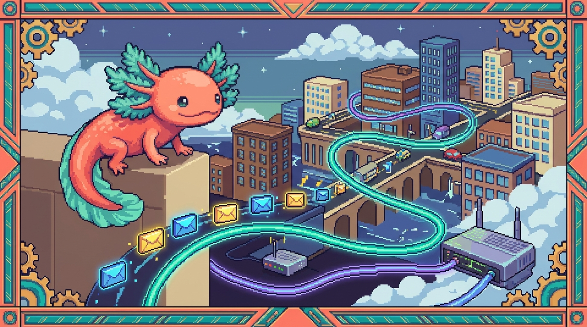

Capítulo 12 — Internet a fondo

En el Capítulo 03 viste a vuelo de pájaro qué es internet: una red de computadoras que se hablan entre sí. Ahora toca bajar al detalle. Vas a ver cómo tu mensaje se parte en pedacitos (paquetes) que viajan por rutas distintas, cómo TCP/IP los vuelve a armar al otro lado, qué hace exactamente un router, qué es un puerto, y por qué ese candado del navegador (HTTPS) significa que nadie puede leer tus datos mientras viajan. Nada de esto es teoría suelta: es justo lo que pasa cuando alguien visita tunal-digital en Cloudflare, o cuando tú entras a tu polypaw-nas desde lejos con Tailscale. Bit, el ajolote, te acompaña con la linterna.
1. La idea grande: internet es correo, no teléfono
Con un teléfono fijo de los de antes, mientras dura la llamada se abre un cable dedicado entre tú y la otra persona. Internet no funciona así. Se parece mucho más al correo postal: escribes una carta, la metes en sobres, y el sistema postal se encarga de llevar cada sobre a su destino, aunque cada uno tome un camino distinto.
Esa diferencia lo cambia todo. No existe un "cable exclusivo" entre tu computadora y el servidor de un sitio web. Lo que hay es una red enorme y compartida por la que viajan millones de sobrecitos a la vez, y unos aparatos llamados routers que van decidiendo por dónde mandar cada uno.
🟦 ¿Qué significa? — Paquete
Un paquete es un pedacito pequeño de información con una etiqueta de dirección pegada. En vez de mandar un archivo o una página entera de un solo golpe, internet la corta en muchos paquetes. Cada uno lleva: de dónde viene, a dónde va, qué número de pedazo es (1 de 100, 2 de 100...) y un trocito de los datos. Así la información viaja en partes manejables y se puede rearmar al final, aunque algunos pedazos lleguen tarde o se pierdan por el camino.
💡 Tip — Por qué partir en pedazos es buena idea
Si mandas todo en un solo bloque gigante y se corrompe a la mitad, perdiste todo y hay que empezar de cero. Con paquetes, si uno falla, se reenvía solo ese. Y como bonus, muchos paquetes de muchas personas pueden compartir los mismos cables a la vez, sin que nadie tenga que "esperar su turno" para una llamada completa.
2. Direcciones IP: el número de casa de cada computadora
Para que un paquete llegue a algún lado, necesita una dirección. En internet, esa dirección se llama dirección IP.
🟦 ¿Qué significa? — Dirección IP
Una dirección IP (IP = Internet Protocol) es el número que identifica a una computadora dentro de una red, igual que el número identifica una casa en una calle. Hay dos tipos comunes: IPv4, que se ve así
192.168.1.40, e IPv6, más larga, así2001:db8::7334. Gracias a ella, los paquetes saben a qué máquina exacta tienen que llegar.
Hay direcciones IP públicas (visibles desde todo internet, como la de tu router de casa hacia afuera) e IP privadas (que solo valen dentro de tu red local, como 192.168.x.x). Tu polypaw-nas tiene una IP privada dentro de tu casa, y los dispositivos del hogar lo encuentran por ahí. Pero desde la calle esa IP privada no sirve de nada: justo por eso, más adelante, entra Tailscale.
🔎 En tu código
Cuando arrancas Faro (carpeta
Organizer) en tu máquina connpm run dev, Next.js te suelta algo comohttp://localhost:3000. Eselocalhostes un apodo de la IP127.0.0.1, que siempre quiere decir "esta misma computadora". Por eso solo lo ves tú: es una dirección que apunta a ti mismo.
3. TCP/IP en términos simples: las reglas del juego
Para que computadoras de marcas y países distintos se entiendan, todas siguen las mismas reglas. A un conjunto de reglas de comunicación se le llama protocolo.
🟦 ¿Qué significa? — Protocolo
Un protocolo es un acuerdo de cómo se hablan dos máquinas: en qué orden mandan los datos, cómo confirman que llegaron, qué hacer si algo se rompe. Son como las reglas de cortesía de una conversación: "tú hablas, yo confirmo que entendí, luego respondo". Gracias a ellas, aparatos completamente distintos se entienden sin caos.
El protocolo más famoso de internet es en realidad una pareja: TCP/IP. Vale la pena verlos por separado, porque cada uno hace una cosa.
🟦 ¿Qué significa? — IP (Internet Protocol)
IP es la parte que se ocupa de las direcciones y de mover paquetes de un punto a otro. No promete que lleguen, ni que lleguen en orden: solo dice "este paquete va para allá, que los routers lo empujen". Es rápido pero descuidado, como echar cartas al buzón sin pedir acuse de recibo.
🟦 ¿Qué significa? — TCP (Transmission Control Protocol)
TCP es la parte cuidadosa que va encima de IP. Se asegura de que todos los paquetes lleguen, los pone en orden (1, 2, 3...) y vuelve a pedir los que se perdieron. Si IP es el cartero apurado, TCP es el supervisor que cuenta los sobres y avisa: "falta el número 7, reenvíalo". Gracias a él recibes la página o el archivo completo y correcto.
TCP tiene un primo llamado UDP, más rápido pero sin garantía de orden ni reenvíos. Se usa en videollamadas o juegos, donde es mejor perder un pedacito que esperar. Para la web normal, manda TCP.
🟦 ¿Qué significa? — UDP (User Datagram Protocol)
UDP es otra forma de mandar paquetes que, al revés que TCP, no confirma que lleguen ni los reordena: los dispara y sigue su camino. Es como gritar un mensaje sin esperar a que el otro diga "lo escuché". Funciona bien cuando la velocidad importa más que la perfección: videollamadas, juegos en línea, transmisiones en vivo. Si se pierde un pedacito, mejor seguir adelante que congelar todo esperando a que se reenvíe.
💡 Tip — El "apretón de manos"
Antes de mandarte datos, TCP hace un saludo de tres pasos (three-way handshake): tu máquina dice "¿hola, estás ahí?", el servidor responde "sí, aquí estoy, ¿y tú?", y tu máquina cierra con "confirmado, empecemos". Recién entonces empiezan a fluir los datos. Es como tocar la puerta y esperar el "pase" antes de entrar.
4. Routers: los carteros que deciden el camino
Los paquetes no saltan por arte de magia del origen al destino. Van pasando por máquinas intermedias que los empujan hacia su meta. Esas máquinas son los routers.
🟦 ¿Qué significa? — Router
Un router (enrutador) es un aparato que recibe paquetes y decide hacia dónde mandarlos para acercarlos a su destino. Cada router conoce a sus vecinos y elige el siguiente "salto". Su trabajo es conectar redes distintas: el router de tu casa une tu red local con la de tu proveedor de internet, y ese a su vez con el resto del mundo.
Un paquete que va de tu casa a un servidor lejano puede pasar por 10, 15 o 20 routers distintos. A cada uno de esos pasos se le llama un salto (hop). Lo más curioso es que dos paquetes del mismo mensaje pueden tomar rutas diferentes y aun así llegar bien, porque TCP los reordena al final.
🔎 En tu código
Tu polypaw-nas (la Acer Nitro con Ubuntu Server 26.04) está conectada al router de tu casa. Cuando desde tu laptop abres Cockpit en
http://<ip-del-nas>:9090, el paquete sale de tu laptop, llega al router de casa, este ve que la IP de destino es local y se lo entrega directo al NAS sin salir a internet. Rápido y privado.💡 Tip — Ver los saltos tú mismo
En una terminal puedes escribir
traceroute tunaldigital.com(en Windows estracert). Te muestra la lista de routers por los que pasan tus paquetes hasta llegar al sitio. Es como ver el itinerario de tu carta, parada por parada.
5. Puertos: las puertas numeradas de cada computadora
Una computadora hace muchas cosas a la vez: navega, recibe correo, comparte archivos. Si solo tuviera una dirección IP, ¿cómo sabría que un paquete es para el navegador y no para el servidor de archivos? Ahí entran los puertos.
🟦 ¿Qué significa? — Puerto
Un puerto es un número (del 0 al 65535) que indica a qué programa dentro de una computadora va dirigido un paquete. Si la IP es la dirección del edificio, el puerto es el número del apartamento. Gracias a él, una misma máquina puede ofrecer varios servicios al mismo tiempo sin confundirlos.
Hay puertos "famosos" que casi todo el mundo respeta por convención:
| Puerto | Servicio | Para qué |
|---|---|---|
| 80 | HTTP | Webs sin cifrar (antiguo) |
| 443 | HTTPS | Webs cifradas (lo normal hoy) |
| 22 | SSH | Conexión remota segura a un servidor |
| 445 | SMB / Samba | Compartir archivos en red |
| 9090 | (Cockpit) | Panel de tu NAS |
🟦 ¿Qué significa? — SSH (Secure Shell)
SSH es una forma segura de conectarte a otra computadora y darle órdenes por terminal, como si estuvieras sentado frente a ella, pero a distancia y con todo cifrado. Usa el puerto 22. Te sirve para administrar servidores; por ejemplo, entrar a tu polypaw-nas y escribir comandos sin tener un monitor enchufado a él.
🟦 ¿Qué significa? — SMB / Samba
SMB es el protocolo que usan las computadoras para compartir carpetas y archivos en una red local, de modo que una carpeta de un equipo aparezca como una unidad en otro. Samba es el programa que hace funcionar SMB en Linux. Usa el puerto 445. Es lo que hace que el share PolyPawNAS de tu NAS se vea desde tu laptop como una carpeta más.
🟦 ¿Qué significa? — Cockpit
Cockpit es un panel de control que se abre en el navegador para administrar un servidor Linux a base de clics en vez de comandos: ver uso de disco, memoria, servicios, actualizaciones. Escucha en el puerto 9090. Te sirve para manejar tu polypaw-nas de forma visual y cómoda.
🔎 En tu código
Tu polypaw-nas usa puertos a cada rato. Cockpit escucha en el
:9090(por eso entras con...:9090). Samba (serviciosmbd, sharePolyPawNAS) usa el puerto 445 para que tu carpeta compartida aparezca en otros equipos. Y cuando desarrollas Faro, Next.js usa el:3000. Cada número es una puerta distinta hacia un programa distinto en la misma máquina.⚠️ Cuidado — Abrir puertos a internet es peligroso
Un puerto abierto hacia internet es una puerta por la que pueden tocar desconocidos. Si expusieras el puerto 445 de Samba directo a internet, cualquiera en el mundo podría intentar colarse a tus archivos. Por eso no se abren puertos sensibles al exterior. La forma correcta de llegar a tu NAS desde fuera es una VPN como Tailscale, que veremos abajo.
6. HTTP y HTTPS: hablar en voz alta o hablar en clave
Ya sabes que la web usa los puertos 80 y 443. La diferencia entre ellos es enorme, y tiene que ver con quién puede escuchar tu conversación.
🟦 ¿Qué significa? — HTTP
HTTP (HyperText Transfer Protocol) es el idioma con el que tu navegador le pide páginas a un servidor: "dame la página de inicio", "envío este formulario". El problema es que HTTP viaja en texto plano, sin cifrar. Cualquiera que intercepte los paquetes por el camino (en un wifi público, por ejemplo) puede leerlos tal cual. Funciona para la web, pero hoy se considera inseguro por sí solo.
🟦 ¿Qué significa? — Cifrado
Cifrar es transformar un mensaje legible en algo que parece basura sin sentido, de modo que solo quien tenga la "llave" correcta pueda volver a leerlo. Es escribir en clave secreta. Sirve para que, aunque alguien intercepte tus paquetes, no entienda nada: vería letras y números revueltos en lugar de tu contraseña.
🟦 ¿Qué significa? — HTTPS
HTTPS es HTTP con cifrado (la "S" es de Secure). Por debajo usa una capa llamada TLS que encripta todo lo que viaja entre tu navegador y el servidor. Es lo que provoca el candado en la barra de direcciones. Gracias a él, tus contraseñas, mensajes y datos de pago viajan ilegibles para los curiosos. Hoy es el estándar: casi toda web seria usa HTTPS.
🟦 ¿Qué significa? — TLS (Transport Layer Security)
TLS es la "capa de seguridad" que se ocupa del cifrado en HTTPS. Es el mecanismo que, justo después del apretón de manos de TCP, negocia una llave secreta entre tu navegador y el servidor y revuelve todos los datos con ella. Antes se llamaba SSL (por eso a veces verás "certificado SSL/TLS"); TLS es la versión moderna y segura. Gracias a él, nadie en el camino —ni el dueño del wifi del café— puede leer lo que mandas.
💡 Tip — El candado no dice "esta web es buena"
El candado significa "la conexión está cifrada", no "esta web es honesta". Una web fraudulenta también puede tener candado. El candado protege el camino, no garantiza las intenciones de quien está al otro lado. Verifica siempre que el dominio sea el correcto (que diga
tunaldigital.comy notunaldlgital.com).
7. Certificados: el documento de identidad de un sitio
¿Cómo sabe tu navegador que el servidor con el que habla es de verdad tunaldigital.com y no un impostor? Ahí entran los certificados.
🟦 ¿Qué significa? — Certificado (digital / SSL/TLS)
Un certificado es un archivo que demuestra la identidad de un sitio web, firmado por una entidad de confianza llamada Autoridad Certificadora (CA). Es como una credencial con sello oficial. Tu navegador trae una lista de autoridades en las que confía; si el certificado del sitio está firmado por una de ellas y coincide con el dominio, muestra el candado. Sirve para evitar que alguien se haga pasar por el sitio que quieres visitar.
El certificado hace dos cosas a la vez: confirma la identidad (esto es de verdad tunaldigital.com) y aporta la llave (la información criptográfica con la que arranca el cifrado TLS). Sin un certificado válido, el navegador te planta una pantalla roja de advertencia.
🔎 En tu código
tunal-digital vive en Cloudflare. Cuando publicas tu sitio (
sitio-web/index.html,styles.css,main.js) detrás de Cloudflare, este emite y renueva solo el certificado HTTPS detunaldigital.com. No tienes que crearlo a mano: por eso los visitantes ven el candado sin que tú hagas nada extra. De paso, Cloudflare esconde la IP real de tu origen y filtra el tráfico malicioso.💡 Tip — Mira el certificado de cualquier sitio
En el navegador, haz clic en el candado de la barra de direcciones y busca "el certificado es válido" o "más información". Verás quién lo emitió, para qué dominio y hasta cuándo es válido. Hazlo con
tunaldigital.comy fíjate en que Cloudflare aparece por ahí.
8. Cómo encaja tu Worker de Cloudflare
Tu sitio tunal-digital no es solo HTML estático: tiene un pequeño cerebro en el servidor, el backend/worker.js. Vale la pena ver dónde encaja en todo este viaje de paquetes.
🟦 ¿Qué significa? — Cloudflare Worker
Un Worker es un trocito de código (en tu caso JavaScript) que Cloudflare ejecuta en sus servidores repartidos por el mundo, muy cerca de quien visita tu web. Cuando llega una petición HTTPS, en vez de viajar hasta un servidor lejano, el Worker la atiende en el centro de datos más cercano al visitante. Eso le permite responder rápido y hacer tareas de servidor (como hablar con la API de Claude) sin exponer tus claves al navegador.
El flujo completo, paso a paso, cuando alguien usa tu sitio:
- El visitante escribe
tunaldigital.com. Su computadora le pregunta a un servicio de nombres cuál es la IP (eso es DNS, lo viste en el cap. 03).
🟦 ¿Qué significa? — DNS (Domain Name System)
El DNS es la "agenda de contactos" de internet: traduce nombres fáciles de recordar (como
tunaldigital.com) a la dirección IP numérica de la máquina que sirve ese sitio. Las personas recordamos nombres; las computadoras necesitan números. Gracias a él escribes un dominio en lugar de memorizar una IP. Lo viste a vuelo de pájaro en el cap. 03; aquí solo recordamos que es el primer paso de cualquier visita. 2. Se abre una conexión TCP al puerto 443 de Cloudflare y se hace el apretón de manos TLS usando el certificado. 3. Ya con todo cifrado, el navegador manda la petición HTTPS. Tumain.jsquizá llame a tu Worker. 4. Elworker.jsrecibe la petición, habla con la API de Claude usando una clave que vive solo en el servidor, y devuelve la respuesta. 5. Todo regresa por la misma conexión cifrada. El visitante ve el resultado y el candado.⚠️ Cuidado — La clave de Claude nunca va al navegador
Esto enlaza directo con las reglas de seguridad de tus proyectos: la clave de la API de Claude vive en el Worker (servidor), nunca en
main.js(cliente). Si la pusieras en el JavaScript del navegador, cualquiera podría abrir las herramientas de desarrollo, copiarla y gastarse tu cuenta. Igual que en Faro los tokens viven solo en el servidor y enuser_connectionscon RLS, nunca en el cliente.
9. Tailscale: tu túnel privado al NAS
Quedaba pendiente una pregunta: ¿cómo entras a tu polypaw-nas desde la calle sin abrir puertos peligrosos a internet? Con una VPN, y la tuya es Tailscale.
🟦 ¿Qué significa? — VPN
Una VPN (Virtual Private Network, red privada virtual) crea un túnel cifrado entre tus dispositivos a través de internet, de modo que se comporten como si estuvieran en la misma red local aunque estén en ciudades distintas. Sirve para llegar a equipos privados (como tu NAS) de forma segura, sin tener que exponerlos al mundo.
🟦 ¿Qué significa? — Tailscale
Tailscale es una VPN fácil de usar que construye esos túneles cifrados entre tus aparatos. Le instalas su programa al NAS y a tu laptop, inicias sesión con la misma cuenta, y ambos quedan en una red privada solo tuya. Así, desde cualquier lugar entras a tu polypaw-nas (a Cockpit, a Samba, a AdGuard) como si estuvieras en casa, sin abrir ni un solo puerto al internet público.
La gran ventaja: en lugar de exponer el puerto 9090 o el 445 a todo el mundo (peligrosísimo), Tailscale solo deja pasar a tus dispositivos autenticados, y todo el tráfico va cifrado. Es la respuesta correcta al "Cuidado" de la sección 5.
🔎 En tu código
Con Tailscale activo en tu polypaw-nas, desde tu laptop fuera de casa puedes abrir
http://<nombre-tailscale-del-nas>:9090y entrar a Cockpit, o montar el share PolyPawNAS de Samba, como si estuvieras en tu sala. AdGuard Home y los contenedores de Docker/Podman quedan igual de accesibles, todo dentro del túnel privado. Nadie más en internet ve esas puertas.💡 Tip — VPN vs. HTTPS no es lo mismo
HTTPS cifra una conversación con un sitio web. Una VPN cifra todo el camino entre tus aparatos. Y puedes usar las dos a la vez: entrar por el túnel Tailscale (VPN) a un servicio que además habla HTTPS. Son capas de seguridad que se suman, no que se reemplazan.
10. Juntando todo: el viaje de un clic
Imagina que estás en una cafetería con wifi público y abres tunaldigital.com desde el celular. Esto es lo que pasa, ahora que entiendes cada palabra:
- Tu celular parte la petición en paquetes.
- Cada paquete lleva la IP de destino y el puerto 443.
- Los paquetes cruzan varios routers (saltos) por el wifi de la cafetería, el proveedor, y la red de Cloudflare.
- TCP se asegura de que todos lleguen y en orden; IP los direcciona.
- Antes de nada, TLS cifra la conexión usando el certificado del sitio, así que el dueño del wifi de la cafetería no puede leer nada: solo ve basura cifrada. Aparece el candado.
- El Worker atiende, quizá llama a la API de Claude con su clave secreta del servidor, y responde.
- Tu celular recibe los paquetes, TCP los rearma, y ves la página.
Si en lugar de eso quisieras entrar a tu NAS, el viaje sería parecido pero a través del túnel de Tailscale, llegando a un puerto privado (como el 9090) que nadie más puede ver. Bit aprueba: nada quedó expuesto, todo viajó en clave.
✅ Checklist — ¿ya domino esto?
- [ ] Entiendo que la información viaja en paquetes y no en un bloque único.
- [ ] Sé que IP pone direcciones y mueve paquetes, y TCP garantiza que lleguen completos y en orden.
- [ ] Puedo explicar qué hace un router y qué es un "salto".
- [ ] Distingo una dirección IP (el edificio) de un puerto (el apartamento).
- [ ] Sé qué puertos usan mis servicios: 443 web, 9090 Cockpit, 445 Samba, 3000 Next.js.
- [ ] Explico la diferencia entre HTTP (sin cifrar) y HTTPS (cifrado, con candado).
- [ ] Entiendo qué es cifrar y para qué sirve un certificado.
- [ ] Sé por qué la clave de la API de Claude vive en el Worker y nunca en el navegador.
- [ ] Comprendo cómo Tailscale me deja entrar al NAS sin abrir puertos al mundo.
- [ ] Sé que el candado protege el camino, no garantiza las intenciones del sitio.
🧪 Ejercicios
-
(papel) Explica con tus propias palabras, sin tecnicismos, la diferencia entre una dirección IP y un puerto, usando la metáfora del edificio y el apartamento. Inventa otra metáfora propia.
-
💻 En una terminal, ejecuta
traceroute tunaldigital.com(otracerten Windows). Cuenta cuántos saltos (routers) hay hasta el sitio y anota el número. ¿Son más o menos de 10? -
💻 Abre
tunaldigital.comen tu navegador, haz clic en el candado y abre los detalles del certificado. Anota: quién lo emitió, para qué dominio y hasta qué fecha es válido. -
(papel) Dibuja el viaje de un clic en
tunaldigital.comdesde un wifi público, marcando dónde entra TCP, dónde IP, dónde el cifrado TLS y dónde el Worker. Señala en qué punto exacto la clave de la API de Claude queda protegida. -
💻 En tu polypaw-nas, lista los puertos que están escuchando. Identifica cuál es el de Cockpit (9090) y cuál podría ser el de Samba (445). Explica por qué no querrías abrir el 445 directo a internet.
-
(reto, papel) Explícale a una persona no técnica por qué entrar a tu NAS con Tailscale es más seguro que abrir su puerto 9090 a todo internet. Usa la idea de "túnel privado" frente a "puerta abierta en la calle".